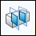
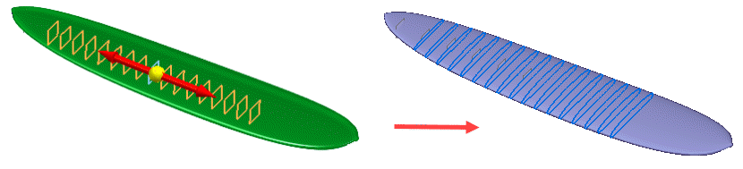
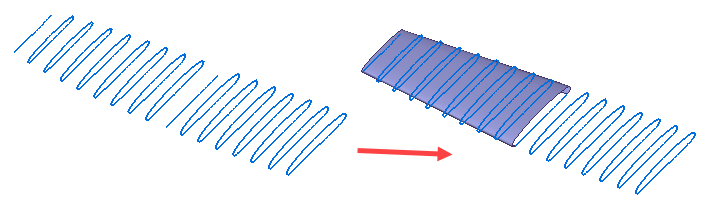

Section Sketches command
Use the Section Sketches command

to create multiple 2D cross-section sketches.You can create multiple sketches by patterning planes.

You can use these sketches to create B-rep models with commands such as BlueSurf.

When creating the sketches, you can use the Section Sketches Options dialog box to recognize entities, such as lines, arcs, and circles to gain more control when editing the sketches.
Note:
Mesh bodies must be divided into regions or faces for these sketch entities to be recognized.
How do I
Create a sketch from a section curveLearn more
Reverse Engineering workflowReverse engineering example
Look up more details
Delete Mesh commandFill Holes command
Smooth Mesh command
Align command
Align command bar
Remesh command
Remesh Options dialog box
Automatic regions command
Manual regions command
Extract surfaces command
Fit surfaces command
Deviation Analysis command
Deviation Analysis command bar
Deviation Analysis Settings dialog box
Section Sketches command bar
Section Sketches Options dialog box
Related Topics
Align a mesh body to a coordinate systemAnalyze the deviation between two objects